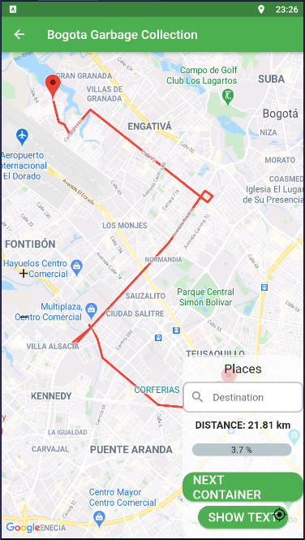
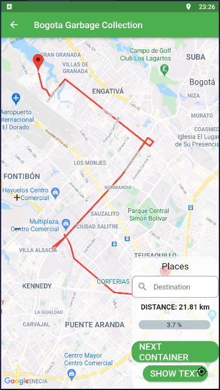

Simulated LoRa Sensor Network as Support for Route Planning in Solid Waste Collection
Miguel Angel Montañez Gomez & Luis Fernando Niño Vasquez
Abstract
Mass production and population growth have produced an increase in the generation of municipal solid waste (MSW) in urban settlements. In consequence, efficient treatment of waste has become a challenge for cleaning entities, possibly because they continue performing collecting operations using fixed periodic routes that exhaustively go across neighbourhood streets in search of every dumpster. Furthermore, in these operations recyclable material is not separated from disposable one, at least in Bogota, thus causing a negative impact on the environment. This work aims to prototype a sensing system that generates routes based on the actual fulfilment level reported by dumpsters. For this purpose, dumpsters were equipped with a level measurement device that uses a proximity ultrasonic sensor. Information was transmitted using a LPWAN (LoRa), and collected data were used to determine which of the dumpsters needs to be collected in the route planned for a specific date, according to the levels reported. Since an operation requires many collecting trucks, a K-means method is used to group dumpsters that are geographically close. A single district of Bogota was selected for demonstration purposes. The collecting sequence was calculated using an open Web service, whose results are shown on an Android mobile application. The mobile app uses the Google Maps routing service. The system shows important reduction of saturation and overflow of containers.
 

Conclusions
Municipal solid waste (MSW) has been increasing in recent years, impacting public health, lifestyles, and the environment. To address this, city governments have made efforts to manage waste sustainably. This research proposes an efficient sensing system that enables cities to make data-driven decisions for waste collection. A prototype was implemented using LoRa technology to transmit data from dumpsters to a GIS database, allowing the generation of optimized collection routes. These routes prioritize dumpsters with high fill levels, reducing travel time and increasing efficiency, with routes displayed in a mobile app to assist truck drivers.
The system addresses the issue of outdated information that hinders dynamic route planning for MSW collection. By integrating IoT and GIS technologies across different layers—physical, networking, data processing, and application—it provides benefits such as cleaner streets, better waste classification, and support for a circular economy. The research highlights the importance of updated data in improving operations and demonstrates the feasibility of using IoT-enabled sensing systems for waste management. For real-world deployment, considerations include sensor accuracy, energy management, node density, and terrain characteristics for more precise route planning.